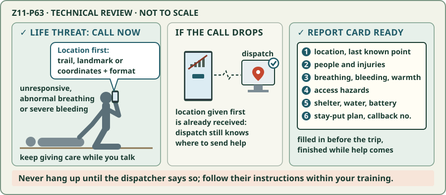

Z11-P63 · Navigation, weather and rescue · New manuscript
Prepare a concise structured rescue report before placing an emergency call
Deliver vital location, medical and hazard information cleanly in the first 30 seconds before a weak call drops.
When it applies · Calling 911, texting 911 or composing a short satellite SOS message during any outdoor or disaster emergency.
Equipment · Written pencil/paper notes or pre-typed message draft, phone/communicator and map.

Actions
- Write down six essentials BEFORE dialing or pressing send: (1) exact location or Last Known Point + coordinate format, (2) nature of emergency & number of injured/total people, (3) immediate medical red flags (responsiveness, breathing, bleeding, hypothermia/heat).[T02, T06, N09]
- Add (4) surrounding access hazards (flooded roads, steep cliffs, ice, downed wires, weather), (5) shelter/water/battery status and clothing colors, and (6) confirmation whether you are staying put and your callback number.[T06, T02, N09]
- Lead with LOCATION FIRST when speaking or texting on a fading battery or weak signal—if the call drops ten seconds in, dispatch still knows where to send help.[T06, T02, T11]
Failure recognition · Spending two minutes explaining how the trip started on a 3% battery before ever stating the park name, trailhead or injury.[T06, T02]
Verify · Review your six written items aloud calmly before dialing and ask the dispatcher to confirm they received your exact location.[T06, T02, ED]
Stop or change course · Never hang up on 911 until the dispatcher instructs you to, and follow all dispatcher safety and medical instructions strictly within your training.[T02]
Evidence and editorial notes
- N09 · NPS · Outdoor Emergency Plan (current web edition)
- Section: If You Get Lost; Seek help · Conditions: Lost hiker who cannot safely retrace steps and has sought rescue
Support: Report last known location and landmarks. Stay put while awaiting help unless an immediate threat requires getting to safety.
Limitations: Navigation, signaling method and safe movement depend on site and responder instructions. · Conflicting evidence: See A02 claim audit for boundaries.
Editorial note: Core evidence for lost-person psychology, signaling and SAR coordination cards. · Specialist reviewer: Search and rescue
Primary source · checked 2026-11-24 - T02 · American Red Cross · First Aid Steps (current web edition)
- Section: First Aid Steps > Call 9-1-1 · Conditions: Lay emergency response to unresponsiveness, abnormal breathing or severe bleeding
Support: Activate EMS and get needed equipment. Follow dispatcher directions and act within training.
Limitations: Remote locations may delay EMS arrival, requiring sustained stabilization after activation. · Conflicting evidence: None; aligns with NPS-E.
Editorial note: Mandates early emergency activation and dispatcher adherence. · Specialist reviewer: EMS and wilderness medicine
Primary source · checked 2026-11-24 - T06 · NPS · Outdoor Emergency Plan (current web edition)
- Section: If you get lost or hurt; call for help · Conditions: Outdoor US emergency
Support: Communicate location, last known point, situation and needs. Stay put when unable to establish a safe route unless immediate danger requires movement.
Limitations: Cell signal is unreliable in backcountry terrain; pre-trip plans bridge communication gaps. · Conflicting evidence: None; core lost-person decision rule.
Editorial note: Foundation for stay/signal/move and dispatch handoff cards. · Specialist reviewer: Search and rescue
Primary source · checked 2026-11-24 - T11 · FEMA / Ready.gov · Make a Plan (current web edition)
- Section: Make a Plan > Family Emergency Communication Plan · Conditions: Households and traveling groups preparing for disruptions
Support: Record out-of-area contacts, local meeting places, medical/allergy summaries, and alternate communication channels (text vs voice) in paper and offline formats; practice the plan periodically.
Limitations: Cellular networks often congest during disasters while SMS or out-of-area contacts may still connect. · Conflicting evidence: None; complements outdoor trip-plan cards.
Editorial note: Anchors emergency communication protocols and group contingency plans. · Specialist reviewer: Emergency management and communications
Primary source · checked 2026-11-24
Source lineage · ARC first aid and NPS emergency plan; new manuscript · Classification · New manuscript.